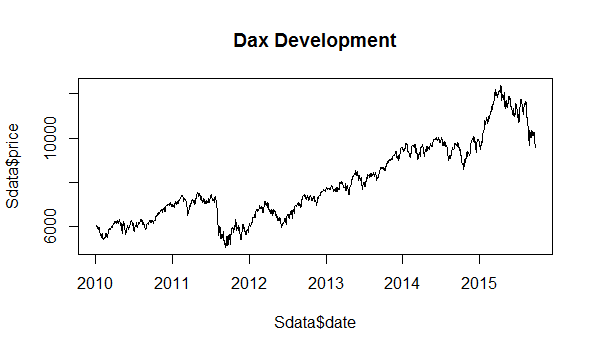
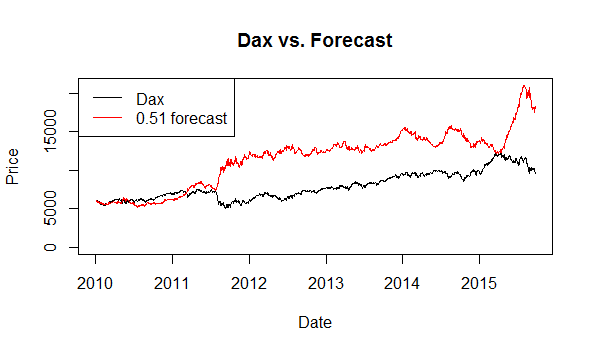
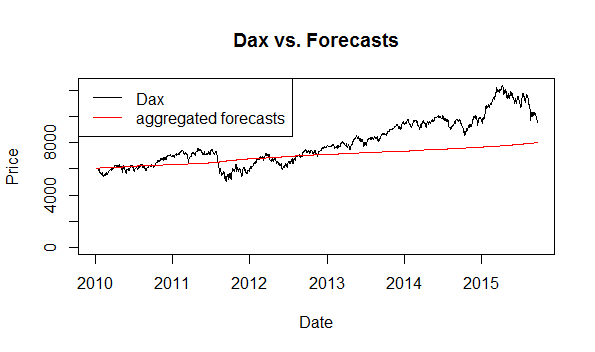
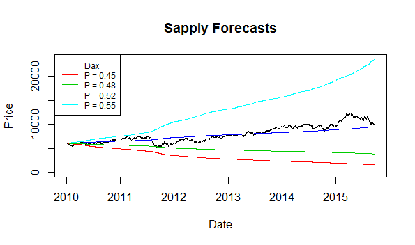
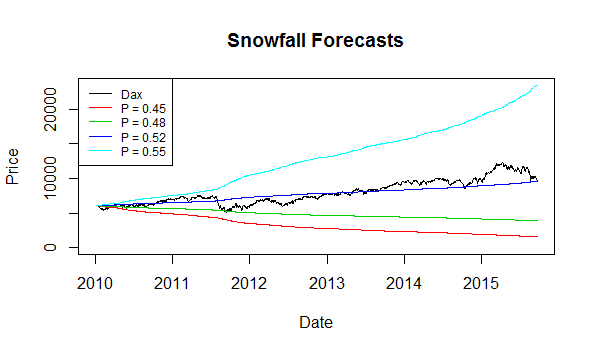

Simulating backtests of stock returns using Monte-Carlo and snowfall in parallel
You could say that the following post is an answer/comment/addition to Quintuitive, though I would consider it as a small introduction to parallel computing with snowfall using the thoughts of Quintuitive as an example.
A quick recap: Say you create a model that is able to forecast 60% of market directions (that is, in 6 out of 10 cases you can predict the direction of the market or an asset for a respective time-period), how well would you do using this strategy?
Hint: if you have a model that is able to predict 60% out-of-sample (think test dataset instead of training dataset) please make sure to share the strategy with me! :)
There are multiple ways to do it, I will show you how to simulate multiple cases using real-life financial data from the German Dax index, Monte-Carlo techniques, and parallel computing using the snowfall-package of the R language.
The piece is structured as follows:
- Load financial data using quantmod
- Show one simulation case with a probability of 51%
- Simulate n cases for one probability and average the result
- Simulate k different cases with different probabilities
- Use the snowfall-package to use parallel techniques
1. Load Financial Data using Quantmod
To have some data we look at the German Dax index (^GDAXI), which consists of the 30 largest companies in Germany. We can load the data and transform it to a dataframe like this:
# load packages
library(quantmod)
# download DAX data from Yahoo
dax <- getSymbols("^GDAXI", from = "2000-01-01", auto.assign = F)
# create a data.frame Sdata, that contains the stock data
Sdata <- data.frame(date = index(dax), price = as.numeric(Ad(dax)))
# calculate returns
Sdata$rets <- Sdata$price / c(NA, Sdata$price[1:(nrow(Sdata) - 1)]) - 1
head(Sdata)
# date price rets
# 1 2010-01-04 6048.30 NA
# 2 2010-01-05 6031.86 -0.0027181096
# 3 2010-01-06 6034.33 0.0004095279
# 4 2010-01-07 6019.36 -0.0024808413
# 5 2010-01-08 6037.61 0.0030318839
# 6 2010-01-11 6040.50 0.0004786889
# create a first plot to have a look at the price development
plot(x = Sdata$date, y = Sdata$price, type = "l", main = "Dax Development")
2. Show one simulation case with a probability of 51%
Now that we have some data, we create a function get.fprice that takes in three arguments: the returns of an asset, the percentage of right predictions, and an initial price of the investment (or just the first price of the benchmark).
The function returns a vector of values of the investment.
get.fprice <- function(rets, perc.right, init.price){
# 1. sample the goodness of the returns
good.forecast <- sample(x = c(T, F),
size = length(rets),
prob = c(perc.right, 1 - perc.right),
replace = T)
# 2. get the forecasted directions, the same as the true rets
# if good.forecast = T
dir <- ifelse(rets > 0, 1, -1)
forecast.dir <- ifelse(good.forecast, dir, -dir)
# if the percentage sampled should be displayed
# mean(dir == forecast.dir, na.rm = T)
# 3. calculate the return of the forecast
forecast.ret <- forecast.dir * rets
# 4. calculate the prices
shift.forecast.ret <- forecast.ret[2:length(forecast.ret)]
forecast.price <- cumprod(1 + shift.forecast.ret) * init.price
forecast.price <- c(init.price, forecast.price)
return(forecast.price)
}With this function we are able to create a single simulation for one probability.
# set a seed for reproducability
set.seed(42)
# simulate one series of prices
Sdata$fprice <- get.fprice(rets = Sdata$rets, perc.right = 0.51,
init.price = Sdata$price[1])
# plot the two developments
plot(x = Sdata$date, y = Sdata$price, type = "l",
main = "Dax vs. Forecast", xlab = "Date", ylab = "Price",
ylim = c(0, max(Sdata$price, Sdata$fprice)))
lines(x = Sdata$date, y = Sdata$fprice, col = "red")
legend("topleft", c("Dax", paste(perc.right, "forecast")),
col = 1:2, lty = 1)
If you play around with the seed, you will see that not all cases show a similar picture. This is something inherent to simulations. To avoid being overly dependent on the seed value for the random number generation, we use the law of large numbers and simulate not one but multiple cases and use the average as a result.
3. Simulate n cases for one probability and average the result
Monte-Carlo based simulations are multiple simulation of random developments.
With the next code-snippet we can simulate n cases per probability (i.e., we take n simulated paths and average them).
First we create a function get.fprice.n that works like the get.fprice-function, but creates not one but n = 10000 cases using the apply-function family.
get.fprice.n <- function(rets, perc.right, init.price, n){
# create a function that produces the goodness of the forecast
get.good.forecast <- function(x){
good.forecast <- sample(x = c(T, F),
size = length(rets),
prob = c(perc.right, 1 - perc.right),
replace = T)
return(good.forecast)
}
# 1. sample the goodness of the returns
good.forecasts <- sapply(1:n, get.good.forecast)
# 2. get the forecasted directions, the same as the true rets
# if good.forecast = T
dir <- ifelse(rets > 0, 1, -1)
forecast.dirs <- apply(good.forecasts, 2, function(x) {
ifelse(x, dir, -dir)
})
# 3. calculate the return of the forecast
forecast.rets <- forecast.dirs * rets
# 4. calculate the prices
forecast.prices <- apply(forecast.rets, 2, function(x) {
cumprod(1 + x[2:length(x)]) * init.price
})
forecast.prices <- rbind(rep(init.price, ncol(forecast.prices)),
forecast.prices)
# collapse the n simulations to just one by taking the average
forecast.price <- apply(forecast.prices, 1, mean)
return(forecast.price)
}
# simulate 10.000 cases
# set a seed for reproducability,
# should not matter due to the Law Of Large Numbers
set.seed(42)
# simulate 10.000 series of prices
t <- Sys.time()
Sdata$fprice <- get.fprice.n(rets = Sdata$rets,
perc.right = 0.51,
init.price = Sdata$price[1],
n = 10000)
Sys.time() - t # takes 5.69257 seconds on my machine
# plot the two developments
plot(x = Sdata$date, y = Sdata$price, type = "l",
main = "Dax vs. Forecasts", xlab = "Date", ylab = "Price",
ylim = c(0, max(Sdata$price, Sdata$fprice)))
lines(x = Sdata$date, y = Sdata$fprice, col = "red")
legend("topleft", c("Dax", "aggregated forecasts"),
col = 1:2, lty = 1)
4. Simulate k different cases with different probabilities
You may want to compare not just one case with 51% but maybe 2, 5 or 100 cases (k) if the time allows it.
The following section creates k = 4 cases that range from 45% to 55% of directions predicted correctly.
Each case is simulated n = 10000 times and then averaged.
k <- 4
# the percentages that will be used later on
perc.right <- seq(from = 0.45, to = 0.55, length.out = k)
perc.right
#> [1] 0.4500000 0.4833333 0.5166667 0.5500000
# simulate k cases n times, equals 40.000 times
t <- Sys.time()
forecasted.prices <- sapply(perc.right, function(x) {
get.fprice.n(rets = Sdata$rets,
perc.right = x,
init.price = Sdata$price[1],
n = 10000)
})
Sys.time() - t # takes 21.592 seconds on my machine
# plot the results
plot(x = Sdata$date, y = Sdata$price, type = "l",
main = "Dax vs. Forecasts", xlab = "Date", ylab = "Price",
ylim = c(0, max(forecasted.prices, Sdata$price)))
for (i in 1:k){
lines(x = Sdata$date, y = forecasted.prices[, i], col = (i + 1))
}
legend("topleft", c("Dax",
paste0("P = ", round(perc.right, 2), sep = ")),
col = 1:(k + 1), lty = 1, cex = 0.75)
5. Use the snowfall-package to use parallel techniques
Now to the interesting part - using parallel techniques to reduce the computation time (time to beat: ~21 seconds).
There are many packages out there in the “R-osphere”.
I found the snowfall package most useful and easiest to use.
If you want to get a broader picture of the possibilities you should head over to Ryan’s slides, which give a comprehensive analysis of high-performance computing in R.
My simplified understanding of parallel computing so far is that there is one master node (think of it as a departement head that coordinates the workers) and multiple slave nodes (the workers). The master node then distributes tasks to each slave that computes the result and sends it back to the master.
In snowfall we first have to specify the number of slaves by initiating the clusters with the sfInit command.
As each slave starts a new environment, we have to export the libraries, functions, and datasets that the slaves will use by calling the sfExport-function (alternative we can call sfExportAll, which exports all elements in the current environment).
Snowfall has it’s own set of functions that work very similar to the apply-family, which we call to hand over the computation to the master node.
To be more precise we call sfClusterApplyLB (LB stands for load balancing).
As a last step we have to stop the cluster by calling sfStop.
Easy, right?
The full snowfall code looks like this:
# load the library
library(snowfall)
# initiate the data
k <- 4
perc.right <- seq(from = 0.45, to = 0.55, length.out = k)
# initiate the clusters, in this case 4 slaves
sfInit(parallel = T, cpus = 4)
# if you are unsure how many cpus you can use, try
# ?parallel::detectCores
# parallel::detectCores(logical = T)
# export the necessary data and functions to each cluster
sfExport("get.fprice.n", "Sdata")
t <- Sys.time()
# use the snowfall cluster-apply, which works similar to sapply
# note that I used sfClusterApplyLB and not sfClusterApply
# the LB stands for Load-Balancing
result <- sfClusterApplyLB(perc.right, function(x){
get.fprice.n(rets = Sdata$rets,
perc.right = x,
init.price = Sdata$price[1],
n = 10000)
})
Sys.time() - t
#> 9.861 seconds
# IMPORTANT: Stop the cluster so it doesn't messes around in the background
sfStop()
# have a look at the data
str(result)
#> List of 4
#> $ : num [1:1463] 6048 6047 6046 6045 6043 ...
#> $ : num [1:1463] 6048 6048 6048 6047 6047 ...
#> $ : num [1:1463] 6048 6049 6049 6049 6050 ...
#> $ : num [1:1463] 6048 6050 6050 6052 6053 ...
# convert to a data.frame
forecasted.prices <- data.frame(matrix(unlist(result), ncol = length(result)))
head(forecasted.prices)
#> X1 X2 X3 X4
#> 1 6048.300 6048.300 6048.300 6048.300
#> 2 6046.659 6047.672 6048.888 6050.085
#> 3 6046.424 6047.589 6048.989 6050.323
#> 4 6045.218 6047.276 6049.403 6051.897
#> 5 6043.136 6046.546 6049.886 6053.465
#> 6 6042.890 6046.399 6049.992 6053.763
# and finally the last plot
plot(x = Sdata$date, y = Sdata$price, type = "l",
main = "Snowfall Forecasts", xlab = "Date", ylab = "Price",
ylim = c(0, max(forecasted.prices, Sdata$price)))
for (i in 1:k){
lines(x = Sdata$date, y = forecasted.prices[, i], col = (i + 1))
}
legend("topleft", c("Dax",
paste0("P = ", round(perc.right, 2), sep = ")),
col = 1:(k + 1), lty = 1, cex = 0.75)
The plot shows basically the same picture compared to the last picture. Everything else would be very strange.
Using parallel techniques, we can reduce the time for the computations from 21 seconds to 9 seconds. If we increase the number of cases (n = 100,000 instead of 10,000) then we should see that the parallel computation takes only a quarter of the time with 4 clusters.
Summary
A few lines of code shows us that even a small advantage (being able to forecast 5%p more correct Dax movements than a coin) can lead to monstrous returns of roughly 30% p.a. (CAGR of an initial investment of 6,050 and a value of 23,480 after 5.5 years). However, the take-away should be that if you find such a model, make sure that you backtest the hell out of it before telling anyone about it. Ex post, everyone is a billionaire. Another take-away and the purpose of this post is how to use Monte-Carlo and parallel computing techniques to create a simple and fast simulation to check something.
Outro
I am not an expert in parallel computing, so should you find an error in the explanation or in the code, please leave a comment and I will happily correct the error. Furthermore, if you have any questions, comments or ideas, please leave a comment or send me an email.
David Zimmermann, PhD
Data Scientist
I am an economist by training, turned programmer/data scientist who loves to program with R, Python, and C++.